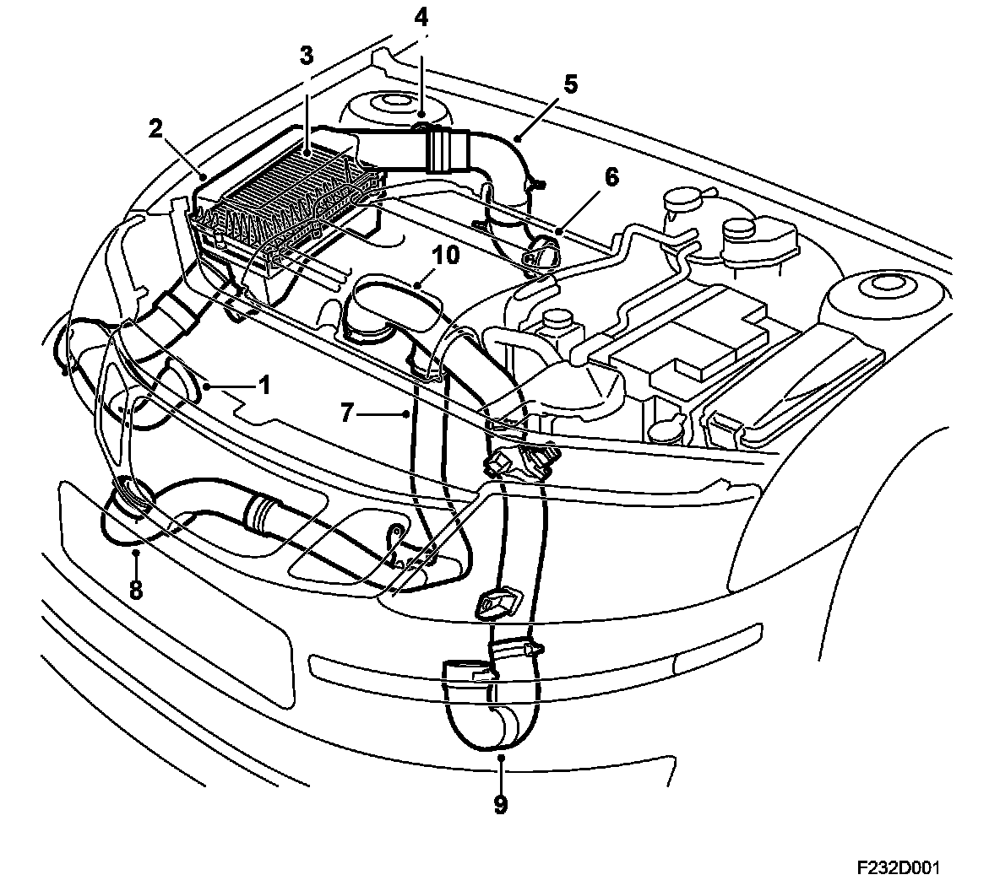

Main Components
Main Components

1. Air intake
2. Air cleaner casing
3. Filter element
4. Mass air flow sensor
5. Connecting pipe
6. Connection to turbo
7. Connection from turbo
8. Connection to charge air cooler
9. Connection from charge air cooler
10. Connection intake manifold